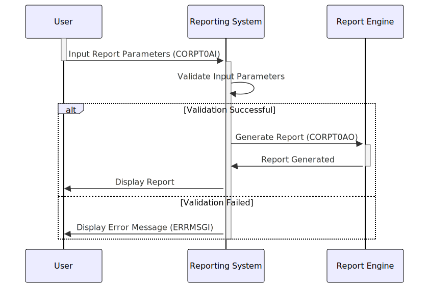

Gerado em: 1 de outubro de 2024
Descrição Resumida: Este programa define estruturas de dados usadas para passar parâmetros relacionados a relatórios corporativos. Esses parâmetros incluem nomes de relatórios, títulos, datas, hora e sinalizadores de confirmação do usuário. Ele garante uma maneira padronizada de lidar e processar solicitações de geração de relatórios dentro do sistema.
Histórias do Usuário: Como administrador do sistema, preciso de uma maneira padronizada de inserir parâmetros para gerar relatórios corporativos, para que o processo de geração de relatórios possa ser iniciado de forma consistente e precisa.
Épico Relacionado: 5 - Relatórios e Análise
Requisitos Técnicos:
Estruturas de Dados:
CORPT0AI: Esta estrutura define o layout para receber parâmetros de entrada em formato de caractere, provavelmente provenientes de entrada do usuário ou fonte semelhante.CORPT0AO: Esta estrutura espelha CORPT0AI, mas redefine o layout para potencialmente se alinhar com os requisitos internos de processamento ou saída. Isso sugere uma potencial transformação de dados ou mapeamento acontecendo entre a entrada do usuário e o tratamento interno dos parâmetros.Campos de Dados:
TRNNAMEx: Este campo armazena o nome do relatório, indicando qual relatório precisa ser gerado. O x no final sugere que pode haver vários campos para acomodar diferentes partes do nome do relatório.TITLE01x, TITLE02x: Esses campos provavelmente contêm títulos ou descrições definidos pelo usuário para o relatório, fornecendo contexto ou personalização para a saída gerada.CURDATEx, CURTIMEx: Esses campos capturam a data e hora atuais, provavelmente usadas para registrar o relatório ou rastrear quando a geração do relatório foi solicitada.MONTHLYx, YEARLYx, CUSTOMx: Esses são sinalizadores de caractere único indicando o período do relatório. MONTHLYx sugere um relatório mensal, YEARLYx um relatório anual e CUSTOMx provavelmente permite que os usuários especifiquem um intervalo de datas personalizado.SDTMMx, SDTDDx, SDTYYYx: Esses campos provavelmente representam a data de início (mês, dia, ano) para os dados do relatório. Isso é relevante quando o sinalizador CUSTOMx é definido, permitindo que os usuários definam um intervalo de datas específico.EDTMMx, EDTDDx, EDTYYYx: Semelhante aos campos de data de início, estes provavelmente capturam a data final (mês, dia, ano) para um período de relatório personalizado.CONFIRMx: Este campo é provavelmente um sinalizador de confirmação do usuário. Um valor ‘Y’ pode significar que o usuário confirmou os parâmetros e deseja prosseguir com a geração do relatório.ERRMSGx: Este campo foi projetado para conter mensagens de erro. Se alguma validação falhar durante o processamento do parâmetro, uma mensagem de erro poderá ser armazenada aqui e retransmitida ao usuário.Tipos e Formatos de Dados:
PIC X para definir campos alfanuméricos como TRNNAMEx, TITLE01x, etc. Isso indica que esses campos podem armazenar letras, números e caracteres especiais.PIC S9(4) é usado para campos numéricos com sinal, como TRNNAMEL, TITLE01L, etc. O ‘S’ denota um campo com sinal e ‘9(4)’ permite até quatro dígitos.MMDDYYYY para datas e HHMMSS para hora, embora o formato exato precise ser confirmado na documentação relacionada ou seções de código.Regras de Negócio:
CONFIRMx sugere uma etapa em que os usuários confirmam seus parâmetros de relatório antes que o processo de geração real seja iniciado. Isso ajuda a evitar a geração não intencional de relatórios ou o uso de dados incorretos.ERRMSGx indica um mecanismo para capturar e comunicar erros encontrados durante o processamento de parâmetros. Isso é crucial para fornecer feedback aos usuários e facilitar a solução de problemas.Modelos Relacionados:
CORPT0AI e CORPT0AO.
reportName (String): O nome ou código do relatório.title1 (String): Um título ou descrição definido pelo usuário para o relatório.title2 (String): Um título ou descrição adicional definido pelo usuário.currentDate (Date): A data em que o relatório foi gerado.currentTime (Time): A hora em que o relatório foi gerado.period (String): O período do relatório (por exemplo, “Mensal”, “Anual”, “Personalizado”).startDate (Date): A data de início do período do relatório (se aplicável).endDate (Date): A data final do período do relatório (se aplicável).Configurações:
Melhorias de Código:
ERRMSGx para ajudar os usuários a identificar e corrigir problemas com sua entrada rapidamente.Melhorias de Segurança:
Diagrama Conceitual:
–Made by “Smart Engineering” (by Compass.UOL)–